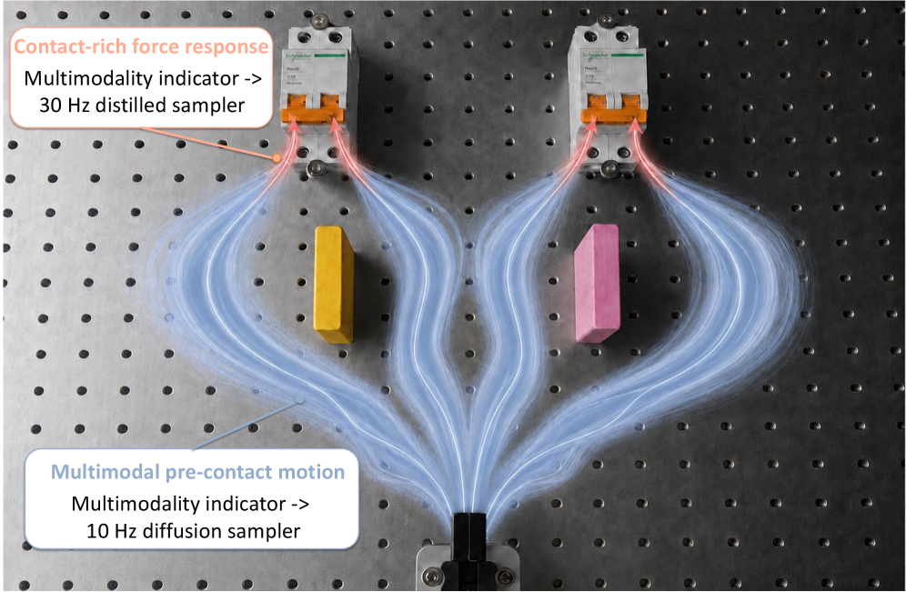
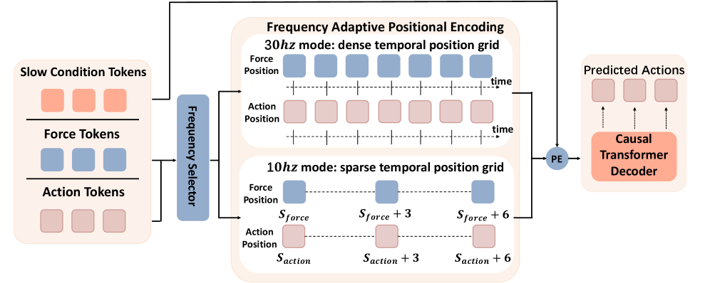

제출: 2026년 7월 30일 · 3 dual-arm contact-rich task · 30 Hz / 10 Hz 이중 주파수
한 줄 요약 (TL;DR)
접촉 전엔 다양한 접근 경로가 유효(low-freq, multi-step 샘플링이 유리), 접촉 후엔 힘 피드백에 빠르게 반응해야 한다(high-freq, one-step). FA-RDP는 학습된 multimodality indicator가 이 전환을 스스로 판단하고, 공유 multi-frequency Visual-Force Transformer가 두 모드를 지원. 나아가 Manifold Consistency Distillation (MCD)로 액션 매니폴드 상에서 예측하도록 재파라미터화. 3개 dual-arm contact-rich 태스크 평균 81.7% (Diffusion Policy 10.0 · RDP 35.0 · ImplicitRDP 51.7). Consistency Policy·MeanFlow는 1.7%로 붕괴, MCD만 61.7% 유지.
1배경 · 문제의식
Contact-rich 조작의 핵심 딜레마: action multimodality vs reactivity. Low-freq 다단계 샘플링은 접촉 전 다중 유효 경로를 보존하지만 접촉 후 힘 반응이 느리다. High-freq 1-step 샘플링은 반응은 빠르지만 접촉 전 모드 붕괴가 일어난다. 저자는 접촉 상황에 따라 두 모드를 동적으로 전환해야 한다고 주장.
2핵심 Contribution
Multimodality-Guided Frequency Adaptation — 학습된 indicator가 시각 관찰을 스칼라 logit으로 매핑, "행동 모호성"을 추정해 low↔high freq 샘플링을 동적 전환. 8개 독립 low-freq 정책 샘플의 action residual로 캘리브레이션.
Multi-Frequency Visual-Force Transformer — 공유 백본이 30 Hz(dense positions)와 10 Hz(sparse)를 동일 시간축의 frequency-adaptive positional encoding으로 지원. 주파수를 별도 토큰이 아닌 index 선택으로 표현해 파라미터 공유.
Manifold Consistency Distillation (MCD) — DDPM 감독을 유지하되 학생 네트워크가 액션 매니폴드 상 직접 예측(x-prediction 유사). Consistency Policy·MeanFlow가 1-step distill 시 붕괴(1.7%)하는 문제를 61.7%로 회복.
3Method
Multimodality Indicator
학습된 Transformer 헤드가 시각 관찰 → 스칼라 logit m ∈ [0,1]. 캘리브레이션 시 동일 조건에서 8개 독립 low-freq 정책을 샘플링, action residual(샘플 간 variance)를 정답으로 confidence-weighted regression. logit이 높으면 접촉 후로 판단해 1-step high-freq 전환, 낮으면 multi-step low-freq 유지.
Multi-Frequency Visual-Force Transformer
공유 백본이 두 주파수를 지원. 핵심 트릭: 주파수를 별도 토큰으로 넣는 대신 동일 timeline 그리드에서 positional index를 선택. dense grid(30 Hz)와 sparse grid(10 Hz)를 frequency-adaptive positional encoding으로 표현해 파라미터 공유하면서 두 모드 동시 학습.
Manifold Consistency Distillation (MCD)
기존 DDPM은 학생이 ε(noise)를 예측하지만, MCD는 학생을 액션 매니폴드 상의 x를 직접 예측하도록 재파라미터화. 손실: L = λMCD·consistency alignment loss(stop-grad teacher와 정렬) + λSRL·sample regression loss(원 데모와의 근접성). 이로써 1-step distillation이 매니폴드 밖으로 떨어져 붕괴하는 것을 방지.
Pre-contact multimodality 보존: FA-RDP는 접촉 전 4가지 접근 모드를 모두 유지, high-freq baseline은 단일 모드로 붕괴. Figure 8의 pre-contact 분포 시각화가 근거.
Force 활용: 힘 곡선이 급변하는 순간에 indicator가 급상승(Figure 9) → 접촉 감지가 정확.
MCD 단독: high-freq 단독으로도 61.7% 유지 → distillation 붕괴 방지가 핵심.
6핵심 Figure / Table

Figure 1 — Multimodality-guided frequency adaptation. 접촉 전엔 multi-step low-freq(다중 모드 보존), 접촉 후엔 1-step high-freq(빠른 힘 반응)로 indicator가 자동 전환. (출처: arXiv:2607.28596)

Figure 2 — Multi-Frequency Visual-Force Transformer. 공유 백본이 dense(30 Hz)·sparse(10 Hz) positional index를 선택하는 방식으로 두 주파수를 동시 지원. (출처: arXiv:2607.28596)
Table I — Diffusion Policy 10.0 vs RDP 35.0 vs ImplicitRDP 51.7 vs FA-RDP 81.7. 힘 반응이 결정적인 Switch/Button에서 격차가 특히 크다. Table III에서 MCD가 Consistency/MeanFlow의 붕괴(1.7%)를 61.7%로 회복시킨 것이 방법론 기여의 핵심 증거.
Figure 8: pre-contact 모드 분포 · Figure 9: indicator 값과 힘 곡선의 시간적 상관.